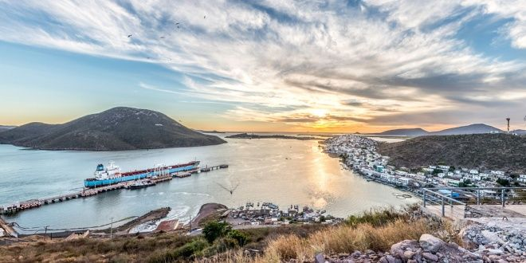
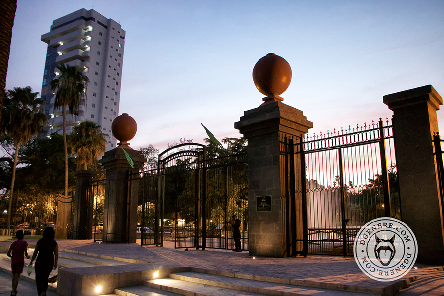

Visita Topolobampo
El Puerto de Topolobampo esta ubicado al Noroeste del país sobre la costa oriental del Golfo de California, pertenece al municipio de Ahome, estado de Sinaloa y se encuentra a una distancia de 25 Km de la Ciudad de Los Mochis, Sinaloa y a 322 kilómetros de la entrada al Golfo de California.
El Maviri
En la zona norte del territorio sinaloense se ubica El Maviri, una vasta franja de territorio costero ubicada entre Bahía de Topolobampo y el Mar de Cortés. Es una zona costera de arena suave y cristalino oleaje. Se trata del balneario más frecuentado por quienes habitan en Los Mochis. Por otra parte, la Isla del Cerro del Maviri tiene aproximadamente dos kilómetros de zonas costeras y está vinculada por un puente a la carretera panorámica que se extiende desde Topolobampo.
